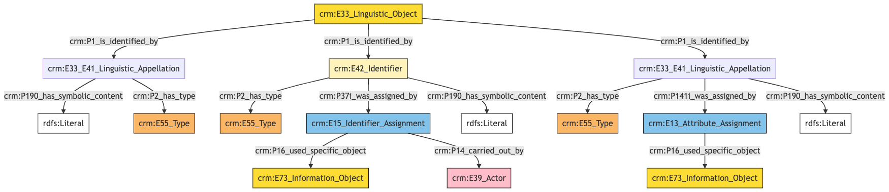
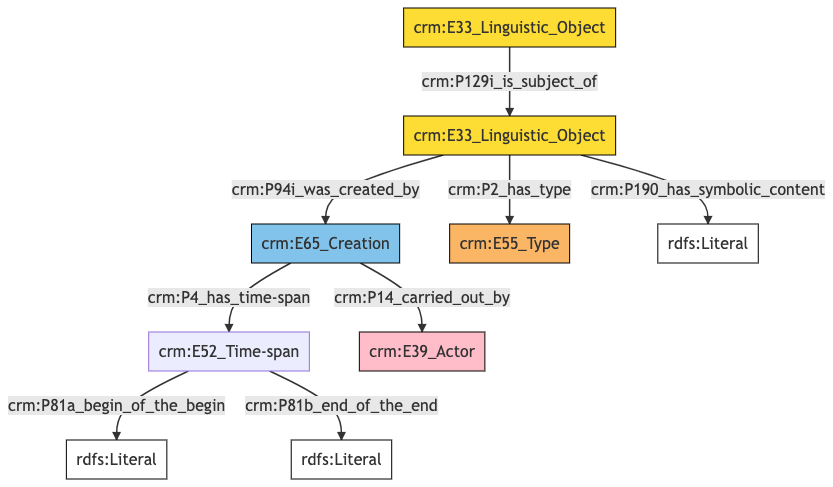

Bibliographic Entity
Author: Denitsa Nenova, George Bruseker
Version: 1.0
The Bibliographic Entity model is intended to enable the representation and sharing of data relevant to bibliographic sources that have been used in the course of researching and documenting. Typical instances of Bibliographic Entity are citations of published research that justify claims made in another model. It is used primarily as a reference model.
| Name | URI | |
|---|---|---|
| Root Ontology Node | E33 Linguistic Object | https://cidoc-crm.org/Entity/E33-Linguistic-Object/version-7.1.1 |
| Type Differentiator | citations (bibliographic references) | http://vocab.getty.edu/aat/300311705 |
The Bibliographic Entity model allows the documentation of the following kinds of information:
| Information Category | Information Collections | Description |
|---|---|---|
| Names and Classifications | Names/Alternative Names/Identifiers/Type | The researcher can document various names and classification regarding the Bibliographic Entity. |
| Description | Description | The researcher can document various free-text descriptions of the Bibliographic Entity. |
Bibliographic Item Names and Classifications
The attribution of names and types to Bibliographic Entity, as with other entities, is a basic human activity. In the context of Bibliographic Entities, titles and subtitles as well as the language of these are of high importance in tracing the individual Bibliographic Entity.
| Filed ID | Name | Description | Data Type | CRM Path |
|---|---|---|---|---|
| fie_1 | Bibliographic Resource Identifier | This field is used to record an identifier attributed to the documented Bibliographic Entity. | String | --> P1 --> E42[1_1] --> P190 --> rdfs:Literal |
| fie_2 | Bibliographic Resource Identifier Type | This field is used to record the type of the identifier attributed to the documented Bibliographic Entity. | Concept | --> P1 --> E42[1_1] --> P2 --> E55[2_1] |
| fie_3 | Bibliographic Resource Identifier Provider | This field is used to record the institution, group or individual responsible for providing the documented Bibliographic Entity's identifier. | Reference Model [Person/Group] | --> P1 --> E42[1_1] --> P37i --> E15[3_1] --> P14 --> E39[3_2] |
| fie_4 | Bibliographic Resource Identifier Source | This field is used to record the source based on which the identifier was attributed to the documented Bibliographic Entity. | Reference Model [Bibliographic Item/Image] | --> P1 --> E42[1_1] --> P37i --> E15[3_1] --> P16 --> E73[4_1] |
| fie_5 | Bibliographic Resource Name | This field is used to record the main name attributed to the documented Bibliographic Entity. | String | --> P1 --> E33_E41[5_1] --> P190 --> rdfs:Literal --> P1 --> E33_E41[5_1] --> P2 --> E55[5_2]{'preferred terms'} |
| fie_10 | Bibliographic Resource Alias | This field is used to record an alternative name under which the documented Bibliographic Entity is known. | String | --> P1 --> E33_E41[10_1] --> P190 --> rdfs:Literal |
| fie_11 | Bibliographic Resource Alias Type | This field is used to record the type of the alternative name that has been attributed to the documented Bibliographic Entity. | Concept | --> P1 --> E33_E41[10_1] --> P2 --> E55[11_1] |
| fie_16 | Bibliographic Resource Alias Source | This field is used to record the source on the basis of which the organization attributing the alternative name use based their attribution. | Reference Model [Bibliographic Item/Image] | --> P1 --> E33_E41[10_1] --> P141i --> E13[15_1] --> P16 --> E73[16_1] |
- Bibliographic Item Names and Classifications Ontology Graph

- Bibliographic Item Names and Classifications RDF
@prefix crm: <http://www.cidoc-crm.org/cidoc-crm/> .
@prefix rdfs: <http://www.w3.org/2000/01/rdf-schema#> .
<https://census.de/example/conceptual_object/E33> a crm:E33_Linguistic_Object ;
crm:P1_is_identified_by <https://example.org/name/fie_10_1>,
<https://example.org/name/fie_1_1>,
<https://example.org/name/fie_5_1> .
<http://vocab.getty.edu/aat/300404670> a crm:E55_Type ;
rdfs:label "preferred terms" .
<https://example.org/actor/fie_3_2> a crm:E39_Actor .
<https://example.org/conceptual_object/fie_16_1> a crm:E73_Information_Object .
<https://example.org/conceptual_object/fie_4_1> a crm:E73_Information_Object .
<https://example.org/event/fie_15_1> a crm:E13_Attribute_Assignment ;
crm:P16_used_specific_object <https://example.org/conceptual_object/fie_16_1> .
<https://example.org/event/fie_3_1> a crm:E15_Identifier_Assignment ;
crm:P14_carried_out_by <https://example.org/actor/fie_3_2> ;
crm:P16_used_specific_object <https://example.org/conceptual_object/fie_4_1> .
<https://example.org/name/fie_10_1> a crm:E33_E41_Linguistic_Appellation ;
crm:P141i_was_assigned_by <https://example.org/event/fie_15_1> ;
crm:P190_has_symbolic_content "content" ;
crm:P2_has_type <https://example.org/type/fie_11_1> .
<https://example.org/name/fie_1_1> a crm:E42_Identifier ;
crm:P190_has_symbolic_content "content" ;
crm:P2_has_type <https://example.org/type/fie_2_1> ;
crm:P37i_was_assigned_by <https://example.org/event/fie_3_1> .
<https://example.org/name/fie_5_1> a crm:E33_E41_Linguistic_Appellation ;
crm:P190_has_symbolic_content "content" ;
crm:P2_has_type <http://vocab.getty.edu/aat/300404670> .
<https://example.org/type/fie_11_1> a crm:E55_Type .
<https://example.org/type/fie_2_1> a crm:E55_Type .
- Bibliographic Item Names and Classifications JSON-LD
{
"@context": "https://linked.art/ns/v1/linked-art.json",
"@graph": [
{
"classified_as": [
"http://vocab.getty.edu/aat/300404670"
],
"content": "content",
"id": "https://example.org/name/fie_5_1",
"type": "Name"
},
{
"classified_as": [
"https://example.org/type/fie_2_1"
],
"content": "content",
"id": "https://example.org/name/fie_1_1",
"identifier_assigned_by": [
"https://example.org/event/fie_3_1"
],
"type": "Identifier"
},
{
"id": "https://example.org/conceptual_object/fie_4_1",
"type": "InformationObject"
},
{
"id": "https://example.org/actor/fie_3_2",
"type": "Actor"
},
{
"id": "https://census.de/example/conceptual_object/E33",
"identified_by": [
"https://example.org/name/fie_1_1",
"https://example.org/name/fie_5_1",
"https://example.org/name/fie_10_1"
],
"type": "LinguisticObject"
},
{
"assigned_by": [
"https://example.org/event/fie_15_1"
],
"classified_as": [
"https://example.org/type/fie_11_1"
],
"content": "content",
"id": "https://example.org/name/fie_10_1",
"type": "Name"
},
{
"_label": "preferred terms",
"id": "http://vocab.getty.edu/aat/300404670",
"type": "Type"
},
{
"carried_out_by": [
"https://example.org/actor/fie_3_2"
],
"id": "https://example.org/event/fie_3_1",
"type": "IdentifierAssignment",
"used_specific_object": [
"https://example.org/conceptual_object/fie_4_1"
]
},
{
"id": "https://example.org/conceptual_object/fie_16_1",
"type": "InformationObject"
},
{
"id": "https://example.org/type/fie_11_1",
"type": "Type"
},
{
"id": "https://example.org/type/fie_2_1",
"type": "Type"
},
{
"id": "https://example.org/event/fie_15_1",
"type": "AttributeAssignment",
"used_specific_object": [
"https://example.org/conceptual_object/fie_16_1"
]
}
]
}
Bibliographic Item Description
Bibliographic Entities, will often have an ‘abstract’ describing them as well as other potential texts such as critiques. The descriptions descriptors allow for the open ended representation of such free text descriptions of the Bibliographic Entity.
| Filed ID | Name | Description | Data Type | CRM Path |
|---|---|---|---|---|
| fie_188 | Bibliographic Resource Description | This field is used to record a description in free text of the documented Bibliographic Entity. | String | --> P129i --> E33[188_1] --> P190 --> rdfs:Literal |
| fie_190 | Bibliographic Resource Description Type | This field is used to record the type of description given of the documented Bibliographic Entity. | Concept | --> P129i --> E33[188_1] --> P2 --> E55[190_1] |
| fie_191 | Bibliographic Resource Description Author | This field is used to record the author of the description given of the documented Bibliographic Entity. | Reference Model [Person/Group] | --> P129i --> E33[188_1] --> P94i --> E65[191_1]>-P14 --> E39[191_2] |
| fie_192 | Bibliographic Resource Description Earliest Date | This field is used to record the earliest possible date for the creation of the description of the documented Bibliographic Entity. | Date | --> P129i --> E33[188_1] --> P94i --> E65[191_1] --> P4 --> E52[191_2] --> P82a --> xsd:dateTime |
| fie_193 | Bibliographic Resource Description Latest Date | This field is used to record the latest possible date for the creation of the description of the documented Bibliographic Entity. | Date | --> P129i --> E33[188_1] --> P94i --> E65[191_1] --> P4 --> E52[191_2] --> P82b —> xsd:dateTime |
- Bibliographic Item Description Ontology Graph

- Bibliographic Item Description RDF
@prefix crm: <http://www.cidoc-crm.org/cidoc-crm/> .
<https://census.de/example/conceptual_object/E33> a crm:E33_Linguistic_Object ;
crm:P129i_is_subject_of <https://example.org/conceptual_object/fie_188_1> .
<https://example.org/actor/fie_191_2> a crm:E39_Actor .
<https://example.org/conceptual_object/fie_188_1> a crm:E33_Linguistic_Object ;
crm:P190_has_symbolic_content "content" ;
crm:P2_has_type <https://example.org/type/fie_190_1> ;
crm:P94i_was_created_by <https://example.org/event/fie_191_1> .
<https://example.org/event/fie_191_1> a crm:E65_Creation ;
crm:P14_carried_out_by <https://example.org/actor/fie_191_2> ;
crm:P4_has_time-span <https://example.org/time_span/fie_192_1> .
<https://example.org/time_span/fie_192_1> a crm:E52_Time-span ;
crm:P81a_begin_of_the_begin "content" ;
crm:P81b_end_of_the_end "content" .
<https://example.org/type/fie_190_1> a crm:E55_Type .
- Bibliographic Item Description JSON-LD
{
"@context": "https://linked.art/ns/v1/linked-art.json",
"@graph": [
{
"id": "https://census.de/example/conceptual_object/E33",
"subject_of": [
"https://example.org/conceptual_object/fie_188_1"
],
"type": "LinguisticObject"
},
{
"id": "https://example.org/actor/fie_191_2",
"type": "Actor"
},
{
"classified_as": [
"https://example.org/type/fie_190_1"
],
"content": "content",
"created_by": "https://example.org/event/fie_191_1",
"id": "https://example.org/conceptual_object/fie_188_1",
"type": "LinguisticObject"
},
{
"carried_out_by": [
"https://example.org/actor/fie_191_2"
],
"id": "https://example.org/event/fie_191_1",
"timespan": "https://example.org/time_span/fie_192_1",
"type": "Creation"
},
{
"id": "https://example.org/type/fie_190_1",
"type": "Type"
},
{
"crm:P81a_begin_of_the_begin": "content",
"crm:P81b_end_of_the_end": "content",
"id": "https://example.org/time_span/fie_192_1",
"type": "crm:E52_Time-span"
}
]
}